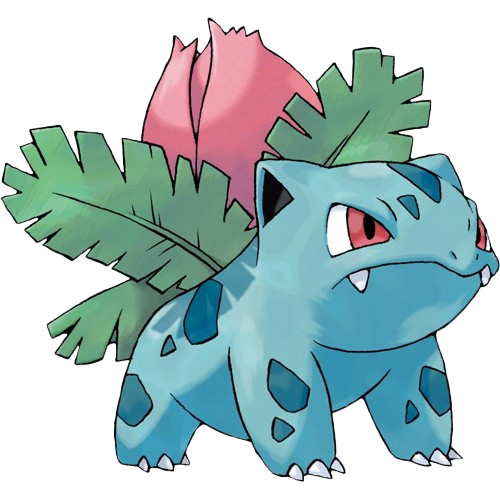
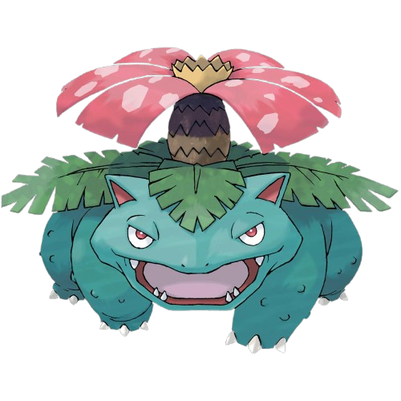

Bulbasauro N° 0001

Bulbasaur é um dos Pokémon iniciais da região de Kanto e ocupa a primeira posição na Pokédex Nacional. Conhecido como Pokémon Semente, possui uma pequena planta em suas costas, que cresce e se desenvolve junto com seu corpo desde o nascimento.
Tipo
Fraquezas
Estatísticas base
Total: 318
Evoluções
Bulbasauro
N° 0001

Ivysaur
N° 0002

Venusaur
N° 0003
Descrição
Essa planta armazena nutrientes e absorve energia solar, permitindo que Bulbasaur utilize diferentes habilidades relacionadas à natureza. Apesar de sua aparência tranquila, ele é capaz de utilizar poderosos ataques dos tipos Planta e Veneno para enfrentar seus adversários. Ao longo de seu desenvolvimento, a semente em suas costas começa a florescer, dando origem a uma planta cada vez maior. Esse processo acompanha suas evoluções para Ivysaur e, posteriormente, Venusaur.
Nos jogos Pokémon Red e Blue, Bulbasaur é uma das três opções de Pokémon inicial oferecidas pelo Professor Oak, sendo uma excelente escolha para treinadores que desejam começar sua jornada com um Pokémon equilibrado e com vantagens contra alguns dos primeiros desafios da região de Kanto.
Curiosidades
- Apesar de seu nome lembrar dinossauros, Bulbasaur tem como inspiração principal um sapo, especialmente pelas pernas curtas e pelo corpo robusto.
- Em 2001, o país de Niue lançou uma moeda comemorativa de prata de 1 dólar neozelandês com uma representação do Bulbasaur em uma de suas faces.
- A designer Atsuko Nishida desenvolveu Venusaur primeiro e trabalhou de trás para frente até chegar ao Bulbasaur. Ou seja, o primeiro da Pokédex foi o último de sua linha evolutiva a ser desenhado!
Principais ataques
- Chicote de Cipó (Vine Whip)
- Folha Navalha (Razor Leaf)
- Pó do Sono (Sleep Powder)
- Raio Solar (Solar Beam)
Bulbasaur é uma ótima opção para treinadores iniciantes que gostam de estratégias envolvendo efeitos de status e ataques de Planta. Se você é um jogador que prefere uma jogada pensada e um controle da situação, Bulbasauro é a melhor opção inicial!